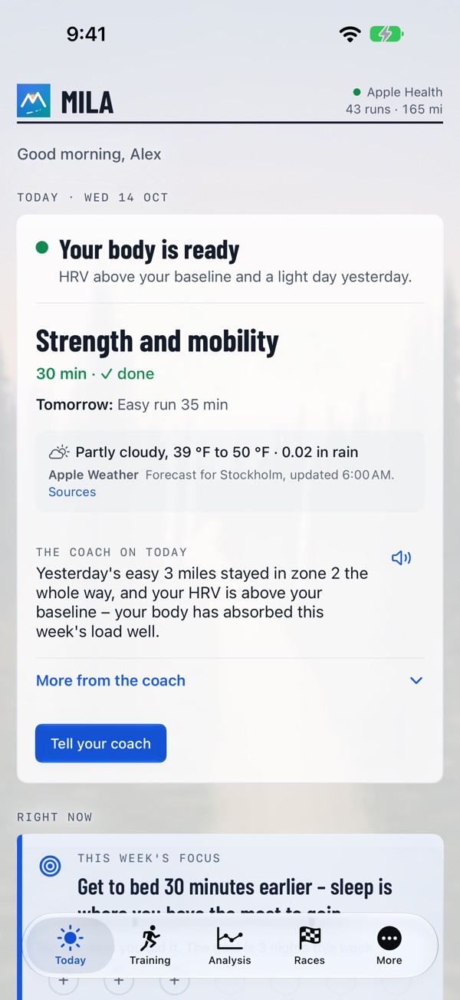
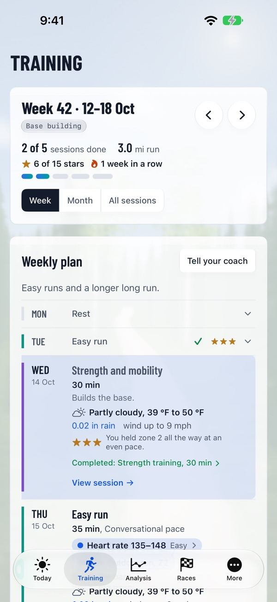
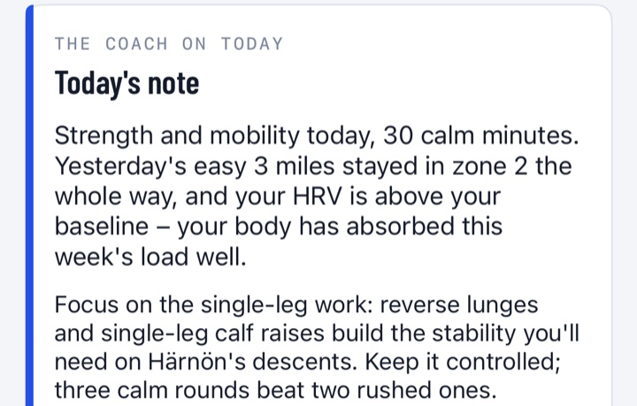

The right run, on the right day.
An AI coach that reads your body and your life every morning – all the way to the finish line.
Mila starts entirely from your own data, your form today and your goal – and turns it into the right run every day: training that fits your life, makes you stronger toward your goal and never asks you to decode a single chart.


More from training, less to figure out
The right run every day – shaped by how you feel and how life looks.
Why Mila is different
Your watch measures. Mila turns it into the right run for you.
A coach one tap away
Every morning the coach writes what today is for and why, with the numbers that matter. When the week ends – Sunday evening, or by Monday morning – the weekly review and next week's plan arrive. And when you wonder about something, ask the coach directly – the answers know your data.

Today's run on your watch
The coach's runs land in the Workout app on your Apple Watch, and everything you run comes back on its own through Apple Health.
Everything a runner needs
From the first easy run to race day.
Weekly plan and daily note
A plan for your goal, a note every morning that weighs in last night's sleep when you wear a watch or ring, and a review when the week ends – Sunday evening, or by Monday morning.
Toward the race
Upload the course for a map, elevation profile, prediction and pacing plan, with the season planned up to race day.
On Apple Watch and in your calendar
On Apple Watch the coach's runs appear with warm-up, intervals and cool-down, and in your calendar at the best time for the weather.
Running form analysis
Film yourself and the coach assesses your stride and suggests drills. Only still frames are sent to the coach; the video never leaves your phone.
Recovery and readiness
Training load every day, plus HRV, resting heart rate and sleep when you wear a watch or ring – read and judged for you.
Works with what you have
Apple Watch, or any watch that syncs to Apple Health – plus Polar directly. Personal bests, streaks, shoe wear and meal photos too.
Works with your watch
Mila reads your runs from Apple Health, so you don't need a particular watch.
Your data stays yours
Apple Health data is read on your phone; a summary goes to the coach, plus what you connect or send (Polar, COROS, meal photos, still frames from running-form films). Mila never sells your data or uses it for advertising, and you can delete your account and everything in it at any time. Your account is stored in the EU; the coach's texts are written by an external AI service in the USA, only after your consent. Mila gives training advice, not medical advice.